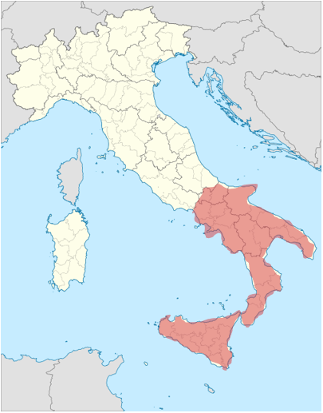
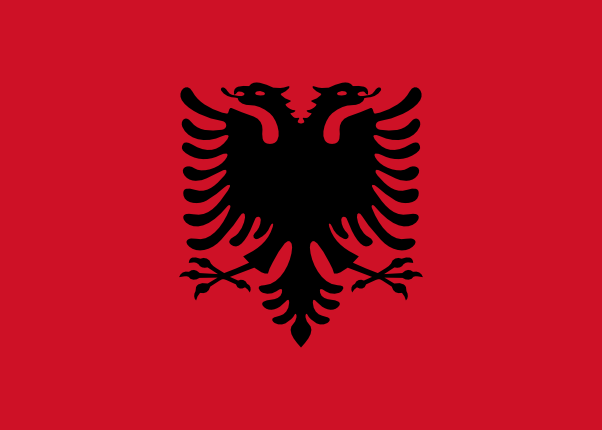

Jezikovna manjšinska skupina albanščina se nahaja predvsem na jugu Italije, saj se tam nahaja največ albanskih izseljencev. Tam velja za enega izmed uradnih jezikov. In sicer se nahaja v:
| Kalabriji Kampaniji Molizah Apuliji Bazilikati Sicilija |
 |  |